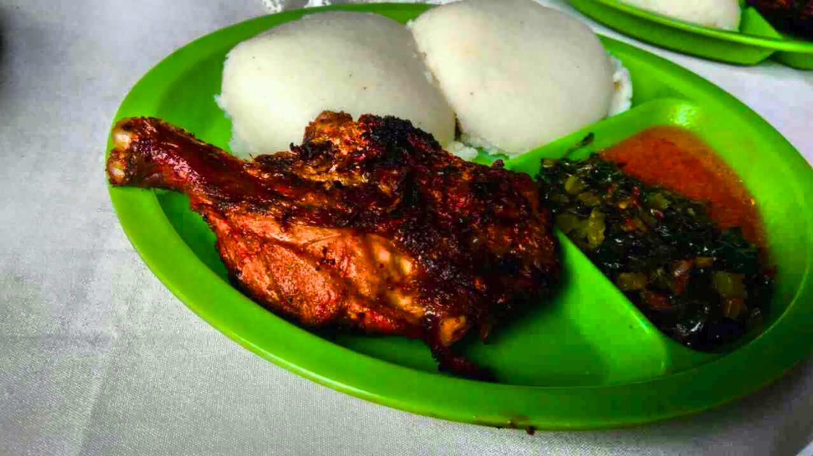

Nsima

Food in Malawi - chicken - green plate
Description
To prepare the meal, you need the following ingredients: maize flour and water
ingredients
- 1kg of maize flour
- 1 cup of water
- a Pot
- cooking stick for stiring
- cooking spoon for serving
Steps
- Prepare fire
- Pour 1 cup of water into a pot.
- Place the pot on fire and wait for the water to get warm.
- Once warm, take handful of flour and add to the water.
- Stir the water mixer until the flour mixes properly with the water.
- Wait for the porridge to boil for 5 minutes.
- add more flour while stiring until it hardens to your liking.
- Then serve the dish and enjoy.
Home